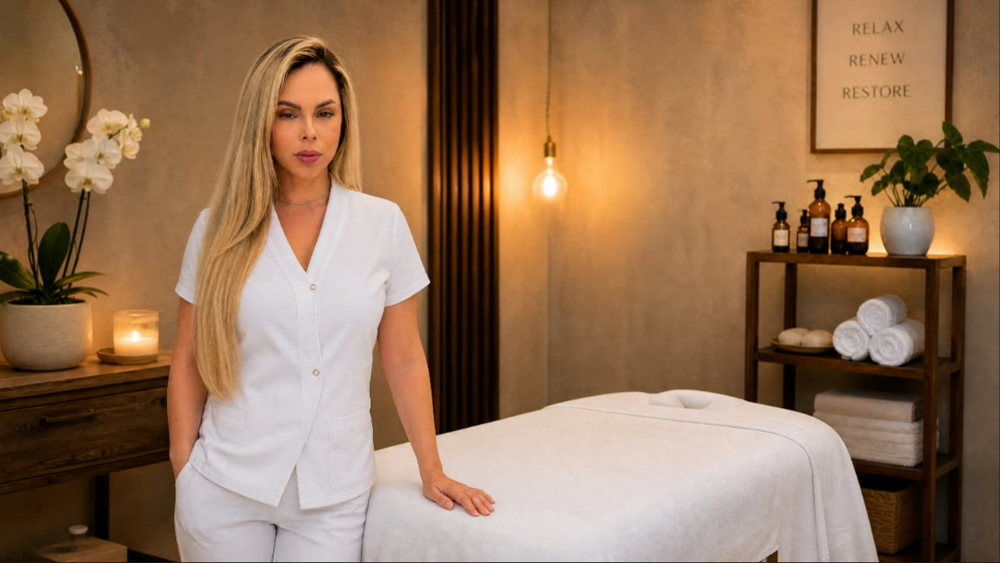

Massagem Nuru · Belo Horizonte
Massagem Nuru em Belo Horizonte
Uma experiência sensorial de outro nível. Corpo a corpo com um gel que transforma o toque em algo fluido, envolvente e absolutamente presente — feita para quem quer sair do óbvio.
Carlos Prates · Atendimento 24 horas · R$ 400


O que é a massagem nuru
Nuru vem do japonês e significa "escorregadio". A técnica foi criada no Japão e usa um gel específico à base de algas nori, sem cheiro, hipoalergênico, que quando aquecido se torna extremamente liso. A massagem é feita corpo a corpo, com deslizamentos longos e contínuos.
Antes da sessão, o corpo é preparado com um banho morno. Depois, o gel aquecido é aplicado e a massagem acontece num colchão específico. Ao final, novo banho — o gel sai com água, sem deixar resíduo, e a pele fica com uma maciez difícil de descrever.
- Gel de algas noriAtóxico, inodoro, hipoalergênico e feito para nuru.
- Colchão próprioSuperfície específica para o deslizamento corpo a corpo.
- Chuveiro no localAntes e depois da sessão, com toalhas macias e privacidade total.
Para quem procura algo diferente
A nuru costuma ser escolhida por quem já experimentou massagens tradicionais e quer sentir algo que sai completamente do padrão. A intensidade sensorial é o grande diferencial: cada centímetro de pele participa.
Recebo em Belo Horizonte, no Carlos Prates, com estacionamento na rua e acesso discreto. O espaço é preparado especificamente para nuru: piso apropriado, temperatura controlada, chuveiro no ambiente e sigilo absoluto. Ninguém mais é atendido no mesmo horário.

Dúvidas frequentes
Sobre a massagem nuru em BH
O que é a massagem nuru?
Técnica japonesa com gel de algas nori, feita corpo a corpo em deslizamentos envolventes.
É seguro para a pele?
Sim. O gel é hipoalergênico, atóxico e sai fácil no banho — não deixa resíduo.
Preciso me depilar antes?
Não é obrigatório. A depilação realça a sensação, mas a massagem funciona bem sem ela.
Onde é feita a nuru?
Rua Lagoa Santa, 11, Carlos Prates. Espaço próprio, com colchão de nuru e chuveiro no local.

Experimente a massagem nuru em BH
Escolha o dia e o horário. Atendo 24 horas, com toda a discrição.
Agendar horário